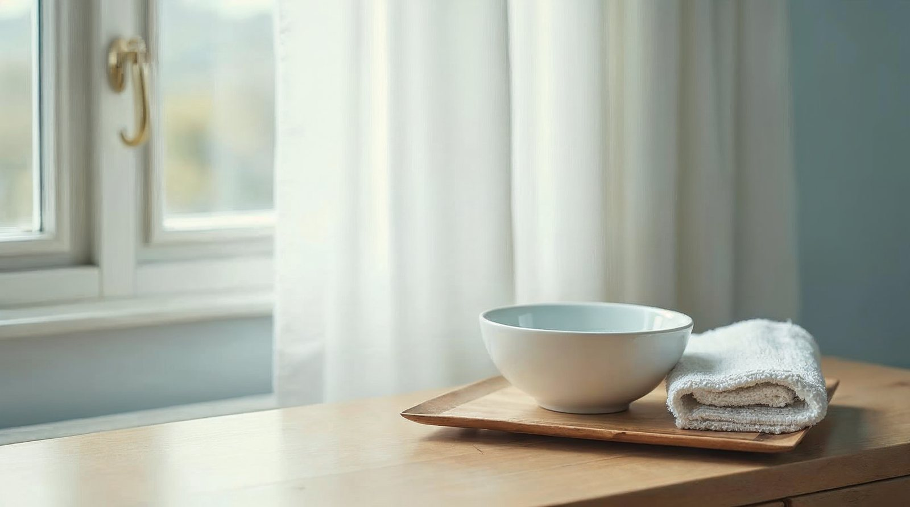
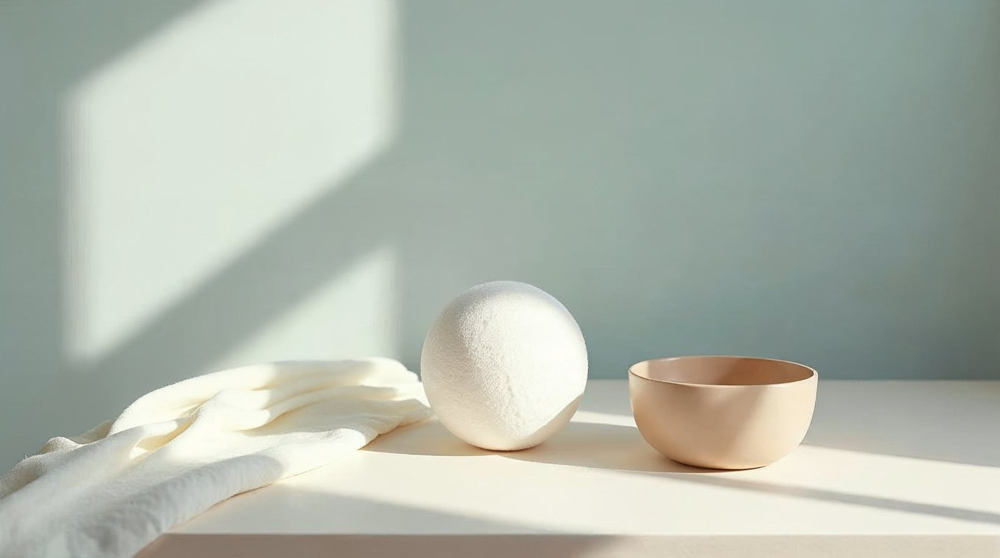
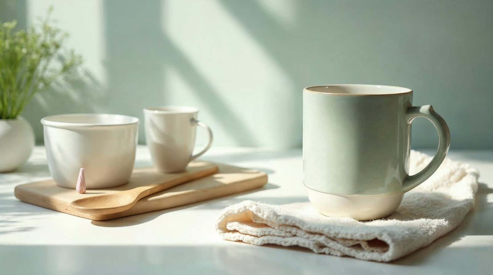
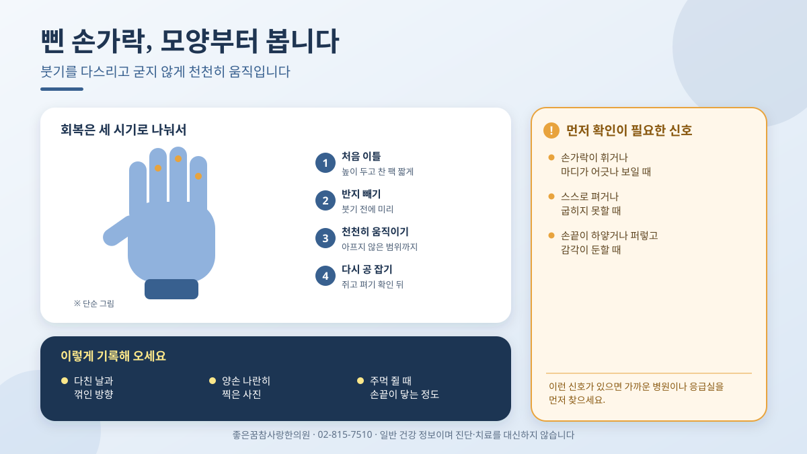

이종호 한의사 감수좋은꿈참사랑한의원 대표원장 (한의사 면허번호 19769)발행 2026-11-26 · 수정 2026-11-26
이 글의 차례
점심시간 운동장에서 날아온 농구공을 받으려다 손끝으로 정면에 맞는 순간이 있습니다. 찌릿한 통증과 함께 손가락을 털어 보지만, 저녁이 되면 가운데 마디가 퉁퉁 부어 반지도 들어가지 않습니다. 다음 날 아침에는 주먹을 쥐기도 어색해집니다.
손가락을 삐는 일은 생각보다 흔합니다. 공놀이를 하다가, 이불을 털다가, 서랍이나 문틈에 손가락이 걸려서, 넘어지며 바닥을 짚다가도 생깁니다. 대수롭지 않게 여기고 며칠 지내다 보면, 붓기는 빠졌는데 마디가 굵어진 채로 남거나 끝까지 펴지지 않아 신경이 쓰이는 경우가 있습니다.
진료실에서 저는 손가락을 먼저 보기 전에 다친 순간을 여쭙니다. 어느 방향으로 꺾였는지, 무엇에 부딪혔는지, 그 자리에서 손가락 모양이 달라 보이지는 않았는지요. 이 이야기 안에 무엇부터 확인해야 하는지에 대한 실마리가 들어 있습니다.
손가락은 작지만 하루에도 수천 번 움직이는 부위입니다. 그래서 처음 몇 주를 어떻게 보내느냐가 나중에 마디가 얼마나 부드럽게 움직이는지와 이어지는 경우가 많습니다.
손가락 염좌는 어떤 상태인가요
손가락 마디는 뼈와 뼈가 만나는 자리를 양옆의 인대와 손바닥 쪽의 두꺼운 판이 붙잡고 있는 구조입니다. 공에 맞거나 꺾이면서 이 인대나 판이 늘어나거나 일부 찢어지면 염좌라고 부릅니다. 흔히 '손가락을 삐었다', '접질렸다'고 말하는 상태입니다.
가장 흔하게 다치는 곳은 손가락 가운데 마디입니다. 공이 손끝을 정면으로 때리면 힘이 가운데 마디로 몰리면서 그 주변이 둥글게 붓습니다. 엄지는 옆으로 벌어지는 방향으로 꺾일 때 엄지 뿌리 쪽 인대가 다치기 쉽습니다.
염좌의 정도는 다양합니다. 살짝 늘어나 며칠 시큰한 정도부터, 인대가 많이 찢어져 마디가 옆으로 흔들리는 경우까지 있습니다. 겉으로 보이는 붓기만으로는 정도를 가늠하기 어려워서, 움직임과 누르는 자리, 흔들림을 함께 봅니다.
왜 붓기가 오래가고 마디가 굵어질까요
손가락은 피부 아래 살이 얇고 공간이 좁습니다. 그래서 작은 출혈과 붓기도 빠져나갈 길이 적어 다른 부위보다 오래 머무는 편입니다. 붓기가 빠진 뒤에도 마디 주변이 단단하게 두꺼워진 느낌이 몇 달 남는 경우가 적지 않습니다.
다친 직후 아프다고 손가락을 전혀 움직이지 않으면 마디 주변 조직이 굳어 펴지지 않는 쪽으로 흘러가기 쉽습니다. 반대로 아픈데도 계속 공을 잡거나 무거운 것을 쥐면 회복 중인 인대가 다시 늘어납니다. 쉬게 할 것과 움직일 것의 균형이 회복의 속도를 정합니다.
손을 많이 쓰거나 물일이 잦은 분은 회복 기간에도 손을 쉬게 하기 어려워 붓기가 더 오래 머물 수 있습니다. 잠이 부족하고 몸이 지쳐 있을 때도 다친 자리가 더디게 가라앉는다고 말씀하시는 분이 많습니다. 그래서 손가락만이 아니라 생활 전체를 함께 봅니다.
단순히 삔 것과 다른 손상은 어떻게 다른가요
손가락을 다쳤을 때 단순한 염좌만 있는 것은 아닙니다. 모양이 비슷해 보여도 확인이 필요한 손상이 섞여 있을 수 있어서, 처음에는 이 부분을 먼저 나눠 봅니다.
- 마디 사이 뼈 한가운데를 눌렀을 때 콕 찌르듯 아프면 뼈에 금이 갔을 가능성을 생각합니다.
- 손가락 끝마디가 아래로 처져 스스로 펴지지 않으면 끝마디를 펴는 힘줄이 다쳤을 수 있습니다.
- 가운데 마디가 굽은 채로 끝마디만 젖혀지는 모양이 생기면 힘줄 손상을 생각합니다.
- 엄지 뿌리가 옆으로 헐겁게 벌어지면 엄지 인대 손상을 확인합니다.
이런 모양이 보이면 정형외과에서 영상 검사와 고정 여부를 먼저 상의하시도록 안내합니다. 힘줄이나 뼈 손상은 처음 몇 주 동안 어떻게 고정하느냐가 회복에 큰 영향을 줄 수 있어, 이 시기를 놓치지 않는 것이 중요합니다.

집에서 먼저 살펴볼 수 있는 것
다친 직후 거울 앞에서 양손을 나란히 펴 보세요. 다친 손가락이 옆 손가락 쪽으로 휘어 보이거나, 손가락을 굽혔을 때 손톱 방향이 다른 손가락과 엇갈린다면 그 모양을 사진으로 남겨 두시고, 뼈를 확인하는 영상 검사를 먼저 받아 보시길 권합니다.
천천히 주먹을 쥐었다 펴 보면서 어느 마디에서 막히는지 확인합니다. 아파도 끝까지 굽혀지고 펴지는지, 아니면 아예 움직이지 않는지는 큰 차이입니다. 억지로 힘을 주어 꺾거나 당겨 보지는 마세요.
붓기와 멍이 다음 날 어디까지 퍼졌는지도 봐 둡니다. 멍이 손바닥 쪽으로 넓게 퍼지거나 날이 갈수록 붓기가 커진다면 진찰을 서두르시는 편이 좋습니다.

회복은 어떤 흐름으로 가나요
손가락 염좌의 회복은 대개 세 시기로 나눠 생각하면 이해하기 쉽습니다. 처음 며칠은 붓기와 열감이 가장 큰 시기, 그다음 몇 주는 붓기가 빠지며 움직임을 되찾는 시기, 그 뒤로는 힘과 버티는 능력을 다시 기르는 시기입니다.
첫 시기에는 붓기를 줄이고 더 다치지 않게 보호하는 데 집중합니다. 두 번째 시기에는 아프지 않은 범위에서 마디를 조금씩 움직여 굳지 않게 합니다. 세 번째 시기에는 집게 동작, 쥐는 힘, 손가락으로 버티는 동작을 천천히 늘려 갑니다.
이 시기의 길이는 다친 정도와 나이, 손을 쓰는 일의 양에 따라 사람마다 다릅니다. 옆 사람이 2주 만에 공을 잡았다고 해서 같은 속도를 따라갈 필요는 없습니다. 내 손가락이 지금 어느 시기에 있는지를 함께 보며 다음 걸음을 정합니다.
엄지와 새끼손가락은 조금 다르게 봅니다
엄지는 물건을 집고 쥐는 일에서 가장 큰 몫을 맡는 손가락입니다. 엄지 뿌리 안쪽 인대가 다치면 병뚜껑을 따거나 열쇠를 돌릴 때 힘이 빠지는 느낌이 듭니다. 그래서 엄지를 다친 경우에는 옆으로 벌렸을 때 헐거운지를 특히 신경 써서 봅니다.
새끼손가락은 넘어지며 바닥을 짚거나 주먹으로 무언가를 칠 때 다치기 쉽습니다. 손등 쪽 뼈까지 아프거나 주먹을 쥐었을 때 새끼 마디가 푹 꺼져 보이면 손등뼈 손상도 함께 확인합니다.
손가락을 삐었을 때 자주 헷갈리는 것
첫째, 당겨서 맞추면 된다는 생각입니다. 예전에는 삔 손가락을 잡아당기는 분이 많았지만, 뼈나 힘줄이 함께 다쳤을 때는 오히려 손상을 키울 수 있습니다. 모양이 어긋나 보이면 손대지 말고 진찰을 받아 보세요.
둘째, 움직일 수 있으니 괜찮다는 생각입니다. 염좌는 움직일 수 있어도 인대가 상당히 늘어나 있는 경우가 있습니다. 반대로 끝마디가 처진 힘줄 손상은 통증이 크지 않아 넘기기 쉽습니다. 아픔의 크기보다 모양과 움직임을 보셔야 합니다.
셋째, 붓기가 빠지면 끝났다는 생각입니다. 붓기가 빠진 뒤에도 마디의 굵기와 뻣뻣함은 몇 주에서 몇 달에 걸쳐 천천히 정리됩니다. 이 기간에 너무 일찍 공을 잡거나 무리하면 같은 자리를 또 다치기 쉽습니다.
먼저 이렇게 여쭙니다
처음 오시면 대략 이런 순서로 여쭙니다. 미리 떠올려 오시면 진료가 훨씬 수월합니다.
- 언제, 무엇을 하다가, 손가락이 어느 방향으로 꺾였나요?
- 다친 직후 손가락 모양이 달라 보이거나 뚝 소리가 났나요?
- 스스로 굽히고 펼 수 있나요? 끝까지 펴지지 않는 마디가 있나요?
- 붓기와 멍은 어디까지 퍼졌고, 날마다 커지고 있나요?
- 정형외과에서 엑스레이를 찍거나 부목을 하셨나요?
- 하시는 일이나 운동에서 손가락을 얼마나 쓰시나요?
정형외과에서 받은 검사 결과나 영상 사진이 있다면 함께 가져와 주세요. 이미 확인한 내용을 바탕으로 회복기에 무엇을 할지 정하는 데 큰 도움이 됩니다.

일상에서 먼저 해 볼 수 있는 것
다친 뒤 처음 이틀 정도는 붓기를 줄이는 데 마음을 씁니다. 손을 심장보다 높게 두고, 얇은 수건으로 감싼 찬 팩을 10~15분씩 대었다 떼기를 몇 차례 합니다.
- 붓기 전에 반지·시계처럼 조이는 것 빼 두기
- 잘 때 손을 베개 위에 올려 두기
- 다친 손가락을 옆 손가락과 가볍게 묶어 함께 움직이게 하기(진찰에서 괜찮다고 할 때)
- 아프지 않은 범위에서 하루 몇 번 천천히 주먹 쥐었다 펴기
- 공 잡기, 무거운 것 들기, 손가락으로 버티는 동작은 잠시 쉬기
옆 손가락과 묶는 방법은 편하지만 모든 경우에 맞지는 않습니다. 힘줄이나 뼈가 다쳤다면 따로 고정해야 할 수 있으니, 진찰을 받은 뒤 방법을 정하시길 권합니다.
붓기가 가라앉기 시작하면 따뜻한 물에 손을 담그고 천천히 굽혔다 펴는 움직임을 더합니다. 아프지 않은 데까지 움직이고 조금 더 가 보는 정도면 충분합니다. 끝까지 억지로 밀어붙이면 다음 날 더 붓기 쉽습니다.
일하실 때는 다친 손가락에 힘이 덜 가는 방법을 찾아보세요. 컵을 다른 손으로 들고, 무거운 장바구니는 손가락 대신 팔에 걸어 드는 식의 작은 바꿈이 회복 기간을 편하게 만듭니다.
한의원에서 함께 살필 수 있는 경우
- 영상 검사에서 뼈 이상은 없다는 말을 들었지만 붓기와 시큰함이 오래가는 경우
- 붓기는 빠졌는데 마디가 뻣뻣해 주먹이 끝까지 쥐어지지 않는 경우
- 고정을 풀고 난 뒤 손가락을 다시 쓰기 시작하는 시기
- 같은 손가락을 여러 번 삐어 마디가 불안한 느낌이 드는 경우
- 손가락을 아끼다 보니 손목과 팔뚝까지 뻐근해진 경우
좋은꿈참사랑한의원에서는 먼저 뼈나 힘줄 손상을 확인해야 할 모양이 없는지부터 봅니다. 그다음 맥을 짚고, 다친 마디와 손목, 팔뚝까지 눌러 보며 불편한 자리를 확인합니다.
진찰한 내용을 바탕으로 침, 온열 관리, 움직임 안내 가운데 지금 상태에 맞는 것을 정합니다. 다친 지 얼마 안 되어 붓고 열감이 있을 때는 온열이나 강한 자극을 서두르지 않습니다. 회복이 더딘 분은 잠과 소화, 손발 온도처럼 몸 전체의 흐름도 함께 살핍니다.
한약을 상의할 때는 드시는 약을 확인한 뒤 신중히 정하고, 임신 중이시면 먼저 알려 주시고 산부인과와도 상의해 주세요.
정형외과에서 고정이나 치료를 받고 계신다면 그 방향을 따르면서 함께 갑니다. 처방받은 약은 상의 없이 멈추지 마시고, 한의원 진료는 그 곁에서 붓기와 뻣뻣함을 함께 돌보는 쪽이라고 생각해 주시면 됩니다.
이렇게 기록해 오시면 상담이 쉬워집니다
손가락은 하루하루 변화가 작아서 기억에만 기대면 나아지는 흐름을 놓치기 쉽습니다. 일주일에 한두 번만 간단히 남겨 보세요.
- 다친 날과 상황, 손가락이 꺾인 방향
- 다친 손가락과 반대쪽 손가락을 나란히 찍은 사진
- 주먹을 쥐었을 때 손끝이 손바닥에 닿는 정도
- 아침에 일어났을 때 뻣뻣한 시간
- 아팠던 동작(병뚜껑 따기, 단추 잠그기, 키보드 등)
사진은 같은 자리, 같은 조명에서 찍으면 비교하기 좋습니다. 기록을 나란히 놓고 보면 붓기가 줄어드는 속도와 움직임이 돌아오는 흐름이 보이고, 다음 단계로 넘어갈 시기를 정하는 데 도움이 됩니다.
다시 공을 잡기 전에
운동으로 돌아가실 때는 통증이 없는 것만으로는 부족합니다. 주먹을 끝까지 쥐고 펼 수 있는지, 다친 손가락으로 가벼운 물건을 집어 버틸 수 있는지를 먼저 확인합니다.
처음 몇 주는 옆 손가락과 묶거나 테이핑을 하고 가볍게 시작하시길 권합니다. 공을 받는 손 모양을 손끝이 아닌 손바닥 전체로 받도록 바꾸는 것도 같은 자리를 다시 다치지 않는 데 도움이 될 수 있습니다.
운동 전에는 손목과 손가락을 따뜻하게 풀어 주는 시간을 짧게라도 가져 보세요. 손바닥을 마주 대고 비비거나, 손가락을 하나씩 천천히 굽혔다 펴는 것만으로도 손이 한결 부드러워집니다. 날이 추운 날 바깥에서 공을 잡을 때는 더 그렇습니다.
손가락은 작아서 대수롭지 않게 넘기기 쉽지만, 매일 쓰는 만큼 천천히 돌보면 다시 편하게 움직일 수 있는 경우가 많습니다. 다음에 오시면 사진과 기록부터 함께 펼쳐 보고, 지금 손가락이 회복의 어느 시기에 있는지 같이 짚어 보겠습니다.
이런 증상은 먼저 확인이 필요합니다
- 손가락 모양이 달라 보이거나, 굽히거나 펴지 못하거나, 몹시 붓거나 멍이 넓게 번질 때
- 손가락 끝이 하얗거나 퍼렇게 변할 때, 감각이 둔해질 때, 상처로 뼈가 드러나 보일 때
이런 신호가 있으면 한의원보다 가까운 병원이나 응급실을 먼저 찾으세요.
함께 읽으면 좋은 글
- 넘어지며 손을 짚거나 손목을 접질린 뒤 시큰한 손목 염좌는 어떻게 살피나요?
- 손가락을 굽혔다 펼 때 딸깍 걸리는 방아쇠수지는 어떻게 살피나요?
- 손가락 끝마디가 굵어지고 욱신거리는 헤베르덴 결절(손가락 관절염)은 어떻게 살피나요?
- 근육이 아픈 것인지 관절이 아픈 것인지 어떻게 짚어서 말하나요?
- 침 치료를 받은 날에는 샤워나 운동을 해도 되나요?

여쭙는 것
- 언제, 무엇을 하다가, 손가락이 어느 방향으로 꺾였나요?
- 다친 직후 손가락 모양이 달라 보이거나 뚝 소리가 났나요?
- 스스로 굽히고 펼 수 있나요? 끝까지 펴지지 않는 마디가 있나요?
생활에서 해 볼 것
- 붓기 전에 반지·시계처럼 조이는 것 빼 두기
- 잘 때 손을 베개 위에 올려 두기
- 다친 손가락을 옆 손가락과 가볍게 묶어 함께 움직이게 하기(진찰에서 괜찮다고 할 때)
한의원에서 함께 살필 것
- 영상 검사에서 뼈 이상은 없다는 말을 들었지만 붓기와 시큰함이 오래가는 경우
- 붓기는 빠졌는데 마디가 뻣뻣해 주먹이 끝까지 쥐어지지 않는 경우
- 고정을 풀고 난 뒤 손가락을 다시 쓰기 시작하는 시기
먼저 확인이 필요한 신호
- 손가락 모양이 달라 보이거나, 굽히거나 펴지 못하거나, 몹시 붓거나 멍이 넓게 번질 때
- 손가락 끝이 하얗거나 퍼렇게 변할 때, 감각이 둔해질 때, 상처로 뼈가 드러나 보일 때
한눈에 보는 표
| 구분 | 핵심 |
|---|---|
| 여쭙는 것 | 언제, 무엇을 하다가, 손가락이 어느 방향으로 꺾였나요? 다친 직후 손가락 모양이 달라 보이거나 뚝 소리가 났나요? |
| 생활에서 해 볼 것 | 붓기 전에 반지·시계처럼 조이는 것 빼 두기 잘 때 손을 베개 위에 올려 두기 |
| 한의원에서 함께 살필 것 | 영상 검사에서 뼈 이상은 없다는 말을 들었지만 붓기와 시큰함이 오래가는 경우 붓기는 빠졌는데 마디가 뻣뻣해 주먹이 끝까지 쥐어지지 않는 경우 |
| 먼저 확인이 필요한 신호 | 손가락 모양이 달라 보이거나, 굽히거나 펴지 못하거나, 몹시 붓거나 멍이 넓게 번질 때 손가락 끝이 하얗거나 퍼렇게 변할 때, 감각이 둔해질 때, 상처로 뼈가 드러나 보일 때 |
자주 묻는 질문
손가락을 삐면 바로 따뜻하게 해야 하나요, 차게 해야 하나요?
다친 직후 붓고 열감이 있는 처음 하루이틀은 수건으로 감싼 찬 팩을 짧게 대는 편이 편합니다. 붓기가 가라앉고 뻣뻣함이 남는 시기에는 따뜻하게 하며 천천히 움직여 봅니다.
엑스레이를 꼭 찍어야 하나요?
손가락 모양이 달라 보이거나, 뼈 한가운데를 눌렀을 때 콕 찌르듯 아프거나, 스스로 펴지지 않는 마디가 있다면 정형외과 영상 검사를 먼저 권합니다. 진찰에서 확인이 필요하다고 판단되면 안내해 드립니다.
마디가 굵어진 채로 몇 달째 그대로인데 괜찮은 건가요?
염좌 뒤 마디 주변이 두꺼워진 느낌은 몇 달에 걸쳐 천천히 정리되는 경우가 많습니다. 다만 움직임이 계속 제한되거나 통증이 이어지면 진찰로 다시 살펴보는 것이 좋습니다.
옆 손가락과 묶어 두면 되나요?
단순 염좌에는 편한 방법이지만, 힘줄이나 뼈 손상이 있을 때는 따로 고정이 필요할 수 있습니다. 진찰로 다친 정도를 확인한 뒤 방법을 정하시길 권합니다.
침을 맞으면서 정형외과 치료를 같이 받아도 되나요?
함께 받으실 수 있습니다. 정형외과에서 받은 고정이나 처방은 그대로 이어 가시고, 받으신 검사와 드시는 약을 알려 주시면 그에 맞춰 진료 방향을 정합니다.
좋은꿈참사랑한의원은 재진 때 지난번 이야기부터 이어서 여쭙니다. 진료시간과 예약은 오시는 길에서 확인하세요.
어디서 상담받을 수 있나요?
좋은꿈참사랑한의원은 서울 동작구 만양로2길 2 신성빌딩 3층·5층(서울 동작구 상도동, 7호선 상도역 3번 출구 근처)에 있습니다. 한의사 3명(이종호 대표원장, 조영기 수석진료원장, 정원영 진료원장)이 진료합니다. 진료시간은 평일 09:30~20:00(점심 13:00~14:00), 토·일·공휴일 09:30~15:00이며, 방문 전 전화로 확인을 권합니다. 예약은 네이버 예약, 카카오톡 상담, 전화 02-815-7510로 받습니다.
이 글은 일반적인 건강 정보이며 개인의 진단이나 치료를 대신하지 않습니다. 증상이 있거나 복용 중인 약이 있다면 진료를 통해 확인하세요. 치료 효과는 개인마다 다를 수 있습니다.
작성 기준: 일반적으로 알려져 있는 건강 정보를 참고해 정리했습니다(대표원장 감수). 증상 기록은 1~2주 동안 하루 1회, 비슷한 시간에 적어 오시면 지난 상태와 비교하기 쉽습니다.